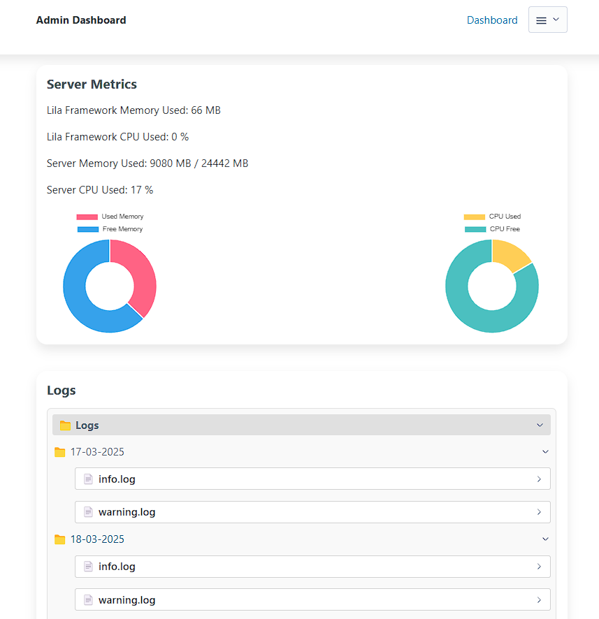
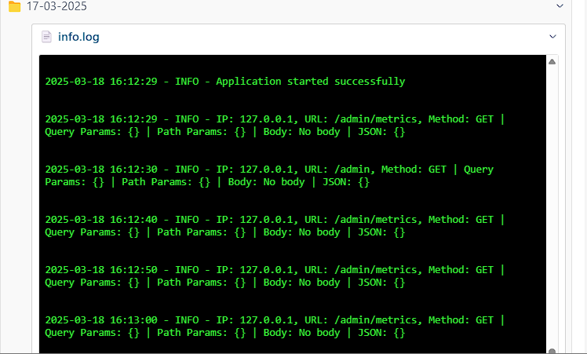

Admin Panel
The lila.core.admin
module mounts an admin panel for your application. It uses the project database
(through app.connections) and an admins table created by
migrations or by lila admin.
Admin 2.0 Features
- Interactive CRUD: create/edit/delete records from the UI or the JSON API. Password columns are hashed on write and never returned by the API.
- CSV export: 1-click download per registered model. Exports are capped at
10,000 rows; when the table is larger, the response includes
X-Lila-Truncated: trueandX-Lila-Total-Rows. - Persistent SPA sidebar: View Transitions navigation without reloads.
- Cache management: purge the cache while preserving sessions
(
Cache.clear_async(include_sessions=False)). - Honest telemetry: real process/system memory and CPU when
psutilis installed; otherwise the dashboard reportspsutil_available: falseandn/ainstead of fake numbers. - Log viewer: reads the date folders from the logger and can clear them
(
DELETE /admin/logs).
Basic Setup
Register models in app/routes/admin/index.py (the CLI
creates this file for you):
from lila.core.admin import admin_routes
from lila.core.routing import Router
from app.models.user import User
router = Router()
admin_routes(models=[User], router=router, default_route="admin")
routes = router.get_routes()
admin_routes() sets router.openapi = False so admin endpoints stay
out of the public schema. The admin session uses the
admin_session cookie.
CLI Setup Command
To initialize the admin tables and create your first administrator:
# Setup Admin 2.0 and create/update a superuser (or: lila-admin)
lila admin --user admin --password secret
# --username is an alias; omit --password to generate one
lila admin --username admin️ Setup and Migrations
lila admin creates the admins table itself. If you prefer plain
migrations (they also add missing columns), run:
lila migrate
Creating Admin Users
Admin users can be created from the command line with custom parameters:
# Default usage (random password generated and printed)
lila admin
# With custom username and password
lila admin --user myadmin --password mysecurepassword
# Aliases: lila-admin / lila-create-admin / lila-create-panel-admin
lila-create-admin --username myadmin
️ Generated Routes
The admin panel mounts these routes under default_route="admin":
The templates live in resources/html/admin
in your project (copied by lila admin).
- Login:
GET/POST /admin/login(CSRF-protected; per-IP rate limited) - Logout:
GET /admin/logout - Dashboard:
GET /admin(requiresadmin_session) - Model page:
GET /admin/{model_plural} - CRUD API:
GET/POST /admin/api/{model_plural},GET/PUT/DELETE /admin/api/{model_plural}/{id}, plusGET /admin/api/{model_plural}/export(CSV) - Cache purge:
POST /admin/cache/clear - Clear logs:
DELETE /admin/logs
️ Authentication Middleware
To protect your own routes for administrators, use
@admin_required from lila.core.middleware. It checks the
admin_session cookie and sets request.state.admin.
from lila.core.middleware import admin_required
from lila.core.admin import render_admin_menu
from lila.core.templates import render
from lila.core.request import Request
@router.get("/admin/reports")
@admin_required
async def admin_reports(request: Request):
return render(request, "admin/reports", context={
"menu": render_admin_menu(models=[User], request=request),
})
System Metrics
The dashboard shows metrics captured when it renders:
- Process RSS memory and CPU (requires
psutil). - System memory and CPU (requires
psutil). - Cache driver, active backend and item count (always available).
Without psutil the JSON reports psutil_available: false and
null values — Lila does not invent telemetry.
Logs
Request logging is enabled with App(routes=[...], logging=True), which adds
LoggingMiddleware from lila.core.middleware. The logger writes
date folders under app/logs/YYYY-MM-DD/; the admin log viewer reads the most
recent ones, and DELETE /admin/logs clears them.


Creating Administrator Users (Simple Command)
The lila-create-admin alias creates or updates a single administrator without
touching routes, middlewares or existing configurations:
# Create an administrator with a specific username and password
lila-create-admin --username myadmin --password mysecretpassword
# Create an administrator with a custom username and auto-generated password
lila-create-admin --username myadmin
Note: the command only creates/updates the admin user in the project
database (it still runs/creates the admins table). It does not generate routes
or templates, so it is safe to use on an existing, customized panel.